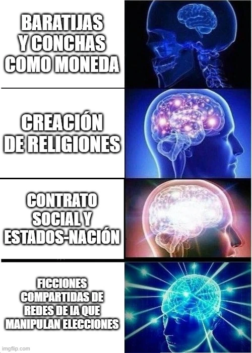

estrategIA #56 ·
Las historias que organizan el mundo
El contexto
En Nexus, Yuval Noah Harari explica cómo las creencias compartidas permiten organizar sociedades: desde aceptar una moneda hasta reconocer un Estado. El meme imagina el siguiente paso con inquietud: que las IAs creen historias capaces de influir en la conversación pública y en las elecciones.
Publicado en: estrategIA #56: "Imperios digitales y el futuro de la humanidad: Harari alerta sobre la IA en Nexus"
Leer el texto de la imagen
BARATIJAS Y CONCHAS COMO MONEDA CREACIÓN DE RELIGIONES CONTRATO SOCIAL Y ESTADOS-NACIÓN FICCIONES COMPARTIDAS DE REDES DE IA QUE MANIPULAN ELECCIONES
Marca de la herramienta visible en el original: imgflip.com.